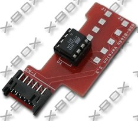
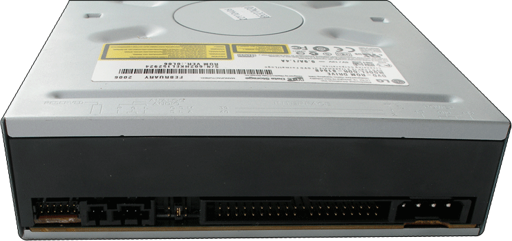

HITACHI
8164 DVD DRIVE ADAPTER FOR XBOX1
As you might
have notice it is more and more
difficult to find new Xbox replacement drives.
Also LG has stopped the production of the 8163b that could be turned
into an Xbox drive very easily. The 8164b is not that easy to use in
the Xbox.
But, after doing some research, they made it work and they produced an
adapter
to make it very easy and clean for everyone to use. The xbox8164adapter
will turn a LG-8164 (PC) drive into a working Xbox1 drive, it's a cheap
solution.

This apdater installs inside the Drive, and the Xbox1 yellow connector
into it.

This is what it looks like COMPLETED. You can see the adapter
installed, far left!
This only works for BACKUPS, so a modchip is needed as well! You
will not be able to use this adaptation in an unmodded Xbox, and that
includes SOFTMODS.
COMPLETE
INSTRUCTIONS